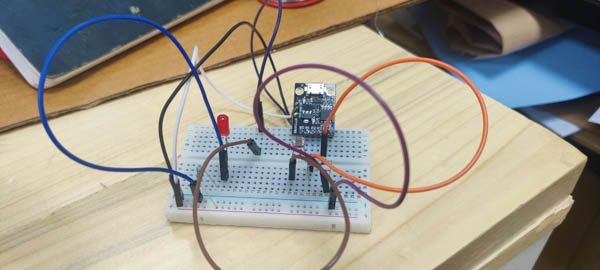
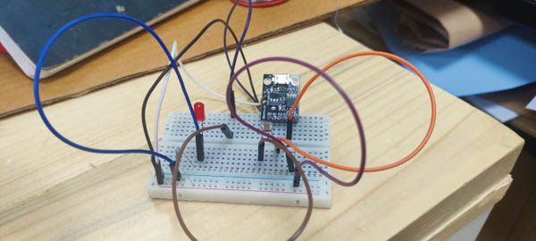

Embedded Programming
Embedded programming sounds scary to me. I have never been on good terms with electronics engineering-ish things, and the trauma that electronics subjects inflict on humble mechanical engineers through engineering school is considerable.
Over the past few years though, the Arduino has been a refreshing and surprisingly easy workflow to grasp. I recognize that it a prototyping board, and it's big and chunky and expensive at times, but man! does it work simply.
So when Neil said that this week's session is intended to make us get past using the Arduino and making one ourselves, use the microcontrollers directly and have everything work at a fraction of the expense, I was all for it.
Choice of Chips
I decided to play a little safe and work with the raw versions of MCUs that I was already familiar with as boards.
So my primary choice was the Atmega 320P, which is at the heart of the Arduino as well. My second familiar chip was the ESP-8266, since I had used NodeMCUs at some point in the past, and they have the benefit of built-in Wifi+BT. Neil in his talk heartily recommended the RP2040, so I added that to my list. Lastly, I was curious about the ATtiny85, which was a tiny little thing but supposed to work with the Arduino IDE as well.
I trawled through the net for How-Tos and other instructions and have a sizeable list of possibilities that I will continue to explore. Once I had understood the lay of the land and figured out a few essential basics, I decided on what options I will be exploring.
Next I went to Robu.in, the Indian version of Radioshack or what-have-you to see what they had in stock and what they said about it, to get a reality check on what's available and prices. I also followed that up with calls and a trip to Lamington road, the street market for all things electronic in Bombay.
These are the few directions I want to really explore : 1. Using the Atmega328P without the rest of the Arduino. There's a few Instructables for giving it an external clock and using it directly, by using an Arduino dev-board or ejecting the chip from an Arduino to use the rest as a bootloader. There's also a How-to on making an Arduino on a breadboard, but I am not too keen on that.
-
Use the RP2040 Not sure what to do with this except blink it for now, but Hey, who knows. It's supposed to be very powerful, so we'll take it for a spin.
-
Use ESP8266 The wifi functionality is an obvious plus, so if I can use the bare chip, that would be nice.
-
Use the ATtiny85 Being a tiny little thing, I am rather enthusiastic for using this in any of it's available forms. I've discovered how to bootload the bare chip using the Arduino, but there's USB and microUSB versions as well that are directly usable. Looking forward to playing with this too.
Weekly Assignment
Most of the tools and chips I need are still shipping - I took too long to decide and order them. However, I have an ATtiny lying around that a friend had dropped off and while I knew in theory that it was an Arduino-IDE compatible protoboard that would do this-that-and-more, I have never actually used it. So while I wait for my chips and dips to arrive, the ATtiny is a go.
I followed the instructions on the page below and added the board source to the Arduino IDE, then got to programming the ATtiny.
The funny part with the ATtiny85 is that you code and compile first, then only plug it in when the IDE asks for it. That bit is likely to throw you off if you forget it.
Anyway, I got the onboard LED to blink.
The next thing I tried was putting an external LED with a 270 ohm resistor on P0 and getting that to blink as well.
The next few things I want to try out with the ATtiny are, first-off, adding an LDR and a Pot to control the LDR's sensitivity, multiple LEDs blinking in different ways in response to the LDR, and playing it forward from there.
 
